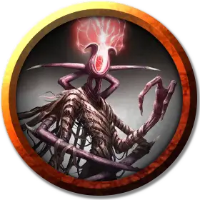

Младший эмиссар звёздных порождений
Lesser Star Spawn Emissary
Средняя Аберрация

Класс Доспеха 19 (природный доспех)
Хиты 241 (21к8 + 147)
Скорость 40 футов, летая 40 футов (парит)
| мод | спас | ||
|---|---|---|---|
| СИЛ | 21 | +5 | +5 |
| ЛОВ | 18 | +4 | +4 |
| ТЕЛ | 24 | +7 | +7 |
| мод | спас | ||
|---|---|---|---|
| ИНТ | 25 | +7 | +13 |
| МДР | 20 | +5 | +11 |
| ХАР | 23 | +6 | +12 |
Навыки Восприятие +11, Магия +19, Обман +18
Сопротивление урону кислота, некротическая энергия, психическая энергия, силовое поле
Иммунитет к состояниям испуг, очарование
Чувства истинное зрение 120 футов, пассивное Восприятие 21
Языки Все, Телепатия 1000 фт.
Опасность 19 (22000 опыта)
Бонус мастерства +6
Особенности
Аберрантное восстановление. Когда хиты эмиссара опускаются до 0, его тело тает. В свободном пространстве в пределах 60 футов от того места, где исчез младший эмиссар, мгновенно появляется высший эмиссар звёздных порождений [greater star spawn emissary]. Высший эмиссар использует инициативу младшего эмиссара.
Легендарное сопротивление (3/день). Если эмиссар проваливает спасбросок, он может вместо этого сделать спасбросок успешным.
Необычная природа. Эмиссар не нуждается в воздухе, еде, питье или сне.
Действия
Мультиатака. Эмиссар совершает три атаки.
Хлещущая пасть. Рукопашная атака оружием: +11 к попаданию, досягаемость 15 фт., одна цель. Попадание: 16 (2к10 + 5) колющего урона и 13 (3к8) урона кислотой.
Психическая сфера. Дальнобойная атака заклинанием: +13 к попаданию, дальность 120 фт., одно существо. Попадание: 18 (2к10 + 7) урона психической энергией.
Смена формы. Эмиссар превращается в Маленькое или Среднего размера существо по своему выбору или принимает свой истинный облик. Его характеристики, за исключением его размера, одинаковы в каждом облике. Все несомое и носимое им снаряжение не превращается.
Легендарные действия
Эмиссар может выполнить 3 легендарных действия, выбрав один из вариантов ниже. Только одно легендарное действие может быть использовано одновременно и только в конце хода другого существа. Эмиссар восстанавливает потраченные легендарные действия в начале своего хода.
Психическая сфера. Эмиссар совершает атаку психической сферой.
Телепортирующаяся пасть (стоит 2 действия). Эмиссар телепортируется в свободное пространство, которое он может видеть в пределах 30 футов от себя, и может атаковать хлещущей пастью.
Психическая плеть (стоит 3 действия). Эмиссар нацеливается на существо, которое он может видеть в пределах 30 футов от себя, и психически атакует разум этого существа. Цель должна преуспеть в спасброске Мудрости Сл 21, иначе получит 36 (8к8) урона психической энергией и станет ошеломлённой до начала своего следующего хода.
Описание
Младшая форма эмиссара звёздных порождений позволяет ему выглядеть как любое существо. Эмиссары не имеют неуместной гордости и с легкостью могут появиться в образе человека, животного или другого существа — чем скромнее, тем лучше. Если истинную форму обнаружат, эмиссар появится в виде грубо двуногой массы возбужденных органов, самопожирающих чужеродных отверстий и придатков, наводящих на мысль о формах, которые он ранее принял.
См. дополнительно статью: "Бестиарий: Эмиссары звёздных порождений"